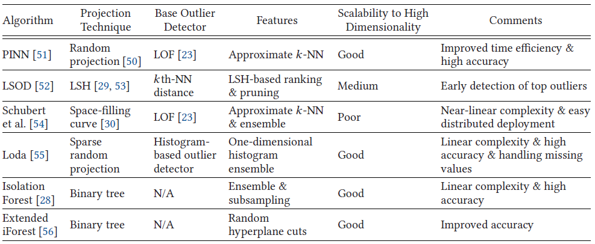

1.3k words in total, 5 minutes required. Boukerche, Azzedine, Lining Zheng, and Omar Alfandi. “Outlier Detection: Methods, Models, and Classification.” ACM Computing Surveys 53, no. 3 (May 31, 2021): 1–37. https://doi.org/10.1145/3381028. 文章较长，笔记分为多篇，下一篇。 基于最近邻方法需要计算pairwise distance会产生二次时间复杂度 (quadratic time complexity)，不具有扩展度。 投影技术，如LSH和随机投影 (random projection)，被用来降低数据维度或者复杂度，并始终保持临近信息。 投影方法总览 1. PINNProjection-indexed Nearest-neighbours (PINN)[1] 使用随机投影技术来获得k-NN关系，随机投影相比于降维技术如PCA，效率很高，搜索k-NN的复杂度从$O(N^2)$下降到$O(N \log N)$。 在k-NN获得后，使用LOF计算outliers，往往会保留多于k个邻居以确保结果质量。 2. LSODLocality Sensitive Outlier Detection (LSOD)[2] 通过LSH来初始化outlier排名。具体而言，LSH将原始数据映射成一维的hash值被分入到不同的桶里。LSOD的outlierness是根据桶里的点的数量来确定的 (越稀疏的桶内的点越可能是outliers)。 LSOD介绍了一系列的剪枝策略来得到top outliers，最终的outlierness是通过k-th distance来计算的。 3. Schubert et al.使用space-filling curves的集成 (ensemble)，通过使用不同 curve 家族来创造不同属性的space-filling curves，并识别outliers。每个点的候选集合被合并，最近邻k被保存为结果[3]。 作者认为space-filling curves比random projection和LSH在k-NN search上的表现更好，因为其保有的就是近邻性，而非距离或者区域信息。作者还提出了distributed的方案，即worker nodes进行space-filling curve projecting，然后发送samples到master结点以进行分布估计。 4. LodaLoda[4]选用一组随机投影函数，通过对多个弱outlier detector进行集成获得较好的结果。每个数据点被投影成一维，并通过histogram对每个数据点进行概率的估算。 首先，每个数据点和维度为$\sqrt{d}$的随机向量进行点积 ($d$即输入数据的维度) ——— 这表示仅有一部分特征被牵扯到投影中。在Loda中，数据实例$p$的输出是投影向量上估计概率 (estimated probabilities on the projection vectors) 的对数的平均值。 其中，$f_i$是第$i$个histogram的概率估算器，$v_i$是对应的投影向量。 5. Tree and Forest树状结构也可以被认为是广义的投影技术，将原始的点投影到特定的树结点上——树结点保持有原始数据的近邻信息。Forest即可以认为是Tree的集成。 Isolation Forest[5]的基本单位是Isolation Tree (iTree)——可以被认为是决策树的无监督版本。给定一个样本集，iTree的构建是通过递归递选择一个随机变量和每个树结点上的随机拆分值，知道高度限制到达或者叶结点上只有一个不重复实例 (distinct data instance)。其intuition是，异常值比正常数据实例更早被隔离的机会。 因此，离群值在隔离树中的高度应该更短。 因此，outlier score被定义为 其中，$\bar{d}(p)$是所有数上$p$的平均深度，而$Ed(p)$是$p$的树路径的期望长度 (根据二叉搜索树中不成功搜索的平均长度来估计的)。 Extended Isolation Forest[6]提出了使用多个属性来拆分数据的方案。每次拆分中，其决定一个$d$维的数据点应该划分到数的左侧还是右侧 (其采用二叉树结构)，采用如下公式 其中，$b$是一个随机截距，它是从均匀分布中得出的，以树节点中数据点的相应属性值的范围为界；$a$是决定分裂斜率的随机向量，每个条目从正态分布中得出。依靠随机的斜率 (而非平行于坐标轴)， extended isolation forest的划分可能更为合理。 Imagine the two-dimensional case where the separation can be visualized by lines. The splitting lines for Isolation Forest are all parallel to the coordinate axes, whereas those for Extended Isolation Forest have different angles. This flexibility in the slope makes Extended Isolation Forest capture the distribution and shapes better than Isolation Forest. 继续阅读下一篇。 扩展阅读1.Timothy De Vries, Sanjay Chawla, and Michael E. Houle. 2010. Finding local anomalies in very high dimensional space. In Proceedings of the IEEE 10th International Conference on Data Mining (ICDM’10). IEEE, 128–137. ↩2.Ye Wang, Srinivasan Parthasarathy, and Shirish Tatikonda. 2011. Locality sensitive outlier detection: A ranking driven approach. In Proceedings of the IEEE 27th International Conference on Data Engineering (ICDE’11). IEEE, 410–421. ↩3.Erich Schubert, Arthur Zimek, and Hans-Peter Kriegel. 2015. Fast and scalable outlier detection with approximate nearest neighbor ensembles. In Proceedings of the International Conference on Database Systems for Advanced Applications. Springer, 19–36. ↩4.Tomáš Pevny. 2016. Loda: Lightweight on-line detector of anomalies. Mach. Learn. 102, 2 (2016), 275–304. ↩5.Fei Liu et al. 2008. Isolation forest. In Proceedings of the 8th IEEE International Conference on Data Mining. 413–422. ↩6.S. Hariri, M. Carrasco Kind, and R. J. Brunner. 2018. Extended isolation forest. ArXiv e-prints (Nov. 2018). arxiv:1811.02141. ↩ ← Previous Post Next Post→ Table of Contents 1. PINN2. LSOD3. Schubert et al.4. Loda5. Tree and Forest扩展阅读